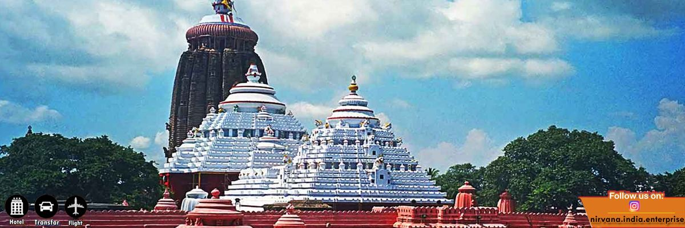

Discover the Charm of Odisha
A perfect blend of tradition, heritage, spirituality, and modern development.
The Pride of Odisha
The pride of Odisha encompasses its profound cultural, artistic, and historical heritage, anchored by the revered Jagannath Temple in Puri, Odissi dance, and exquisite handicrafts. As of 2026, the state is actively promoting its traditional cuisine—celebrated through Pakhala Bhata—and artistic prowess globally to strengthen its unique identity.
Jagannath Temple (Puri): The ultimate spiritual core of Odisha and one of the holy Char Dham pilgrimage sites. It features one of the world's largest kitchens and coordinates the globally famous annual Ratha Yatra chariot festival.
Konark Sun Temple: A UNESCO World Heritage Site renowned for its historic, audacious architectural design built to resemble a colossal stone chariot.

Capital
Bhubaneswar: Known as the "City of Temples," preserving hundreds of historic structures like Mukteshvara and Rajarani
Odishi
Odissi Dance: The oldest surviving classical dance form in India, characterized by fluid body movements and highly expressive storytelling.
Sambalpuri Handlooms
Sambalpuri & Khandua Handlooms: Exquisite hand-woven fabrics featuring traditional Ikat (Bandha) tying and dyeing techniques.